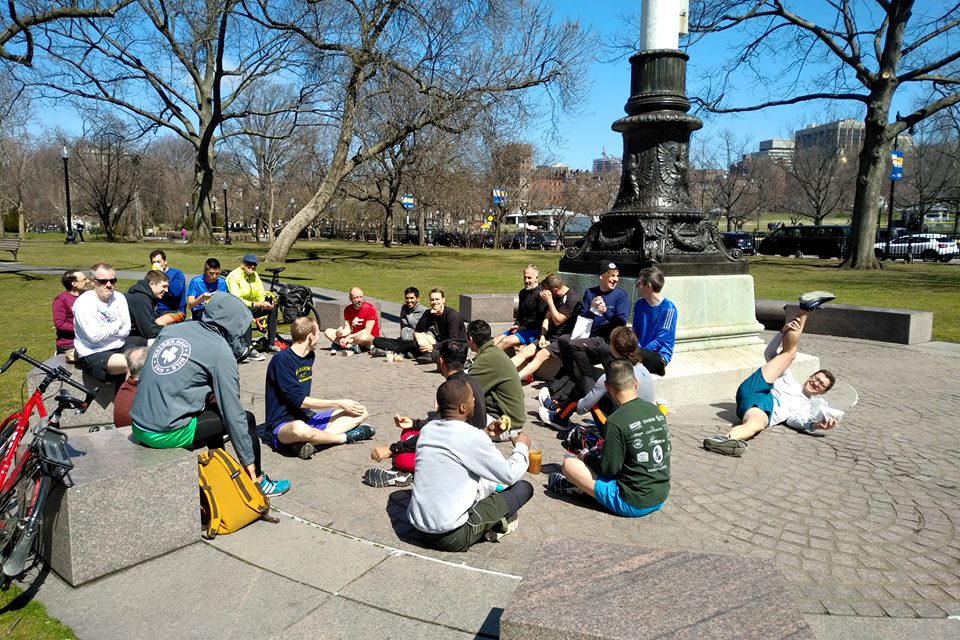
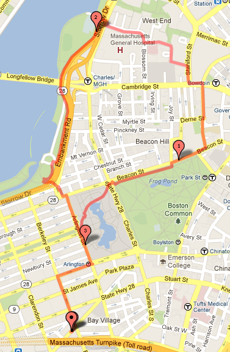
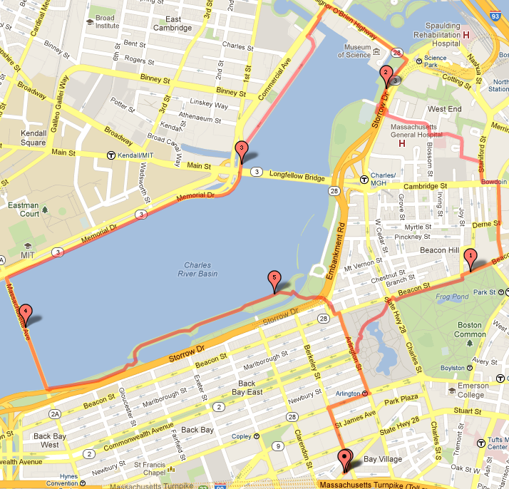
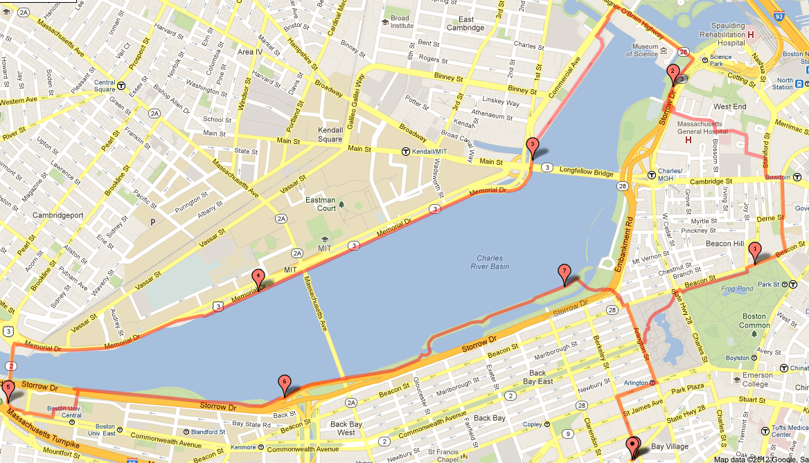
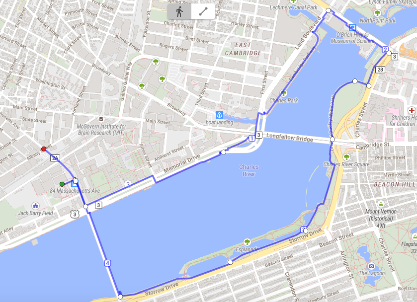

Welcome!
Frontrunners Boston is Boston’s first LGBTQ+ running club, founded
in 1979. Every Thursday evening and every Saturday morning, we meet
and go running along the Charles River. Some people go for a 3 mile
loop, some for a 5.6 mile loop, and some for a 7.8 mile loop. Some
people walk, some people run. Everybody has a good time.
Our typical meeting times are every Thursday at 6:15pm in or outside
the MIT Student Center in Cambridge and every
Saturday at 10am in front of Club Cafe at 209 Columbus
Avenue (near the corner of Berkeley & Columbus) in the Boston Public Garden near the tall
flagpole. Wear a mask.
On occasion we switch things up. We sometimes run on
Thursday evenings from Davis Square in Somerville to Shannon
Beach in Mystic Lakes State Park and swim. For up-to-date
information about our plans this week, please join our Facebook
group.
Come out and run with us this week!

About Us
Frontrunners Boston is Boston's first running club for LGBTQ+ runners and allies, founded in 1979. We welcome and encourage runners of all ages and running abilities to participate in our community. We are an affiliate of International Front Runners, an organization representing LGBT running and walking clubs from around the world.
Contacts
Email Ryan Nicoll at rnicoll {{at}} brandeis {{dot}} edu (replace the {{at}} and {{dot}} with @ and ., respectively.)
Visit us on facebook
Saturday Run
Saturday Run is our main weekly activity. Come out and join us every
Saturday at 10 am (9 am on the Saturday of Pride) in front of Club
Cafe at 209 Columbus Avenue (near the corner of Berkeley &
Columbus) near the tall flagpole in Boston’s Public Garden,
wearing a mask.
If you need to drop off your stuff, show up a bit early and drop it off in
one of our members’ cars. After the run, we wait until everyone
returns and then chat at a distance. If the public health situation
allows it, we will get food from places nearby (such as Flour, Boloco,
or Au Bon Pain) and hang out and eat at the Boston Public Garden (when
the weather is nice) or at the lobby of the Atrium on St. James Ave
(when the weather is not so nice).
How to get to the run
The meeting point is very easy to get to by the subway. The closest T
station is Arlington on the Green Line; Back Bay Station on the Orange
Line is not far. If you are driving, there are plenty of 2-hour
metered parking spots and the Common Garage.
Route maps
There are three different loops, varying by where you want to turn around.
If you're a newcomer, at least one of us will be running with you to
make sure you're not lost.
Please note that our current routes start in the Public Garden rather
than at Club Café.
- 3 miles. Start off the same as everyone but turn around once you get
to the river

- ~6 miles. Crossing Harvard bridge.

- ~8 miles. Skip Harvard Bridge, run to BU Bridge, cross the river, and get back. This route is tricky. Note how we cut through the BU campus on the map.

Thursday Run
Thursday run starts at 6:15pm in Cambridge. We meet outside the MIT
Student Center.
If you’re coming for the first time and/or need a place to store your
things, you should definitely reach out to the Facebook group or e-mail
rnicoll {{at}} brandeis {{dot}} edu.
How to get to the run
The run is between the Central and Kendall/MIT stops on the Red Line. It is
about a 0.5 mile walk from each station. The No. 1 bus also brings you right
near the MIT Student Center, as well.
Route map
- 4.5 miles. This is the route everyone takes on Thursday. We start at
the MIT Student Center and end
outside Saloniki, a restaurant a bit
further down the street where we started. 
How do I participate?
The best way is to join us is to run with us on a Saturday. We welcome new members of all ages, sizes, and running mileages. Out-of-towners and visitors are welcome as well. All you need to do is to show up and run! We are very friendly people. More detail on Saturday runs can be found here. And to stay updated with our club updates and news, please join our Front Runners Boston Facebook group.
What should I expect on my first Saturday run?
First, look for good looking people in running gear on Saturday morning and say hi. We are always keen on welcoming new members. We will go around and introduce ourselves before we start running. At least one of us will be running with you to make sure you’re not lost.
Besides Saturday runs, what else do you guys do?
We have occasional Thursday runs, starting at 6:15pm in Cambridge outside of the MIT Student Center. In addition to this, we occasionally have social events or run races outside of Boston together. You should definitely join or subscribe to our facebook group as we actively post our next social events, upcoming races, updates, etc. on the page. We also advertise these events at the beginning of Saturday run.
Is there a membership fee?
No. The club is free and open to everyone. No registrations, secret handshakes, or hanky codes.
I still have questions. Can I talk to someone?
Email us at rnicoll {{at}} brandeis {{dot}} edu (replace the {{at}} and {{dot}} with @ and ., respectively.)
May 2021!
Boston Pride (2018)
Great group on the morning of Boston Pride!
July Social (2017)
A social at Cathedral Station in the South End
Saturday Brunch
Outdoor brunch in the public garden after a Saturday run